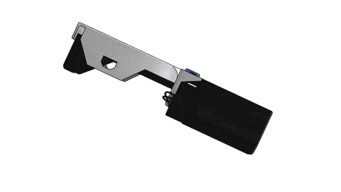
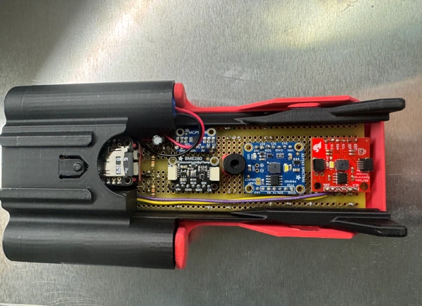
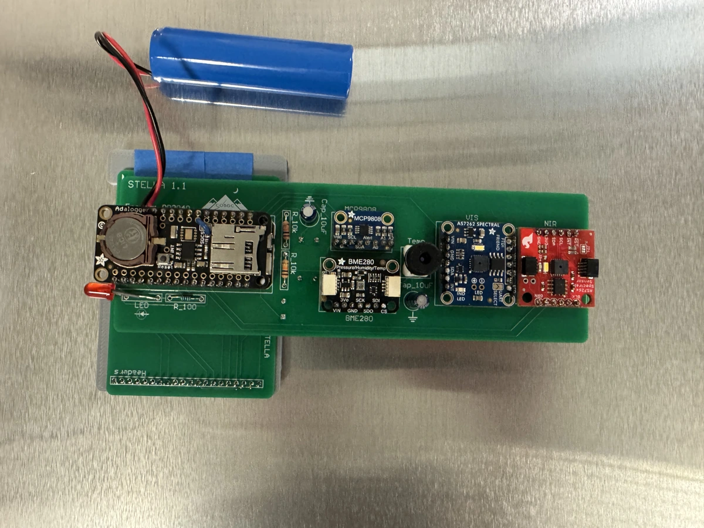

Optical sensing
STELLA Research
I build, calibrate, and deploy NASA’s open-source STELLA spectrometers. These instruments measure visible and near-infrared light for research into detecting heat stress in plants.
Our team developed a custom PCB version to improve signal integrity and simplify assembly. Moving the sensor modules from a hand-wired prototyping board to a dedicated PCB creates a more consistent, repeatable build.


